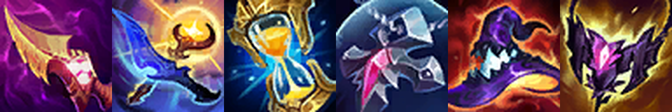
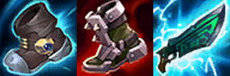
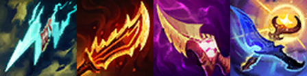
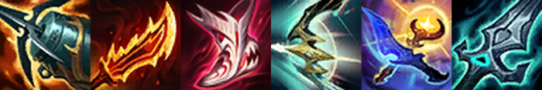
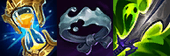

My 6 builds: when to go each
Season 16. Full explanation in the build guide.
- Default: Statikk, Rageblade, Terminus.→
- Can't fight in auto range, or they have lots of squishies: Nashor's or Dusk and Dawn instead of Terminus.→
- AD into 3+ melees: Kraken crit with Runaan's.→
- AD to hunt someone down, or into a hypercarry: Kraken crit with Fiendhunter and Lord Dominik's.→
- One fed target that has to die: full on-hit.→
- Solo lane, scaling matchup: Manamune.→
Runes & start
Bot lane, always: Lethal Tempo, Triumph, Legend: Alacrity, Cut Down + Cash Back, Biscuit Delivery. Shards: adaptive, adaptive, health. Solo lane: Press the Attack instead of Lethal Tempo. Start Doran's Bow on every build except Manamune.
1. Default
The one I go most.



2. No Terminus
Can't fight in auto range, or the enemy is full of squishies (short fights, no value from Terminus).

Then the same situational items as build 1.
3. AD crit: frontline melter
Going AD and they have 3+ melee champions (and no hypercarry).


4. AD crit: the hunter
You have to hunt someone down, or they have a hypercarry. Your R comes up far more often.


Lord Dominik's before Infinity Edge, or you lose damage into anything tanky. After Fiendhunter, spend the Cash Back gold on an extra Dagger and hold it until you need the slot.
5. Full on-hit
One fed target that has to die. Almost impossible to itemise against.


Counter: an enemy with more damage or burst than you. Don't build it blind.
6. Manamune
Solo lane, in a matchup where you can scale.


Runes: First Strike, Cash Back, Triple Tonic, Jack of All Trades, Absolute Focus, Gathering Storm. Shards: attack speed, adaptive, health scaling. Wait one second between R and W, so your W predicts less and lands more.
Kiting setup
Move your cursor as little as possible. Full version in the kiting guide.
- Right-click + Target Champions Only (on a toggle): hits the champion, never the minion next to them.
- A attack move, closest to cursor: for kiting away and messy teamfights. Set it to cursor, not champion.
- C attack range: shows exactly where your autos reach. Mostly a laning-phase tool.
- The rule: running away, A-click right next to your own champion. Chasing, right-click with Target Champions Only if you can be 100% accurate, otherwise A-click.
Guides
More on YouTube.
Coaching
1-on-1 with a Challenger ADC. Built around your own games, not generic tips.
How a session goes
- Your OP.GG first. I look for patterns in your match history and tell you what I find.
- Your weaknesses. You tell me what you think they are, and we pick a game or two that shows them best.
- The full game, in detail. We go through it and talk about everything that comes up, backed with real statistics, not opinions.
- You summarise. You recall what you learned, I write it up as bullet points and fill in the blanks. You keep the summary.
- Live coaching (optional). We put the theory into practice in a real game.
The focus is what matters most for an ADC: early laning, mid-game macro and teamfighting.
Coaching session
25 € / hour
Live 1-on-1 on Discord: your games, your lane, what is actually costing you LP.
+ Data deep-dive
+15 € flat
Before we talk, I pull your recent solo-queue games and run them through my analysis pipeline to find the patterns. The session then goes straight at what matters, and you get a written plan.